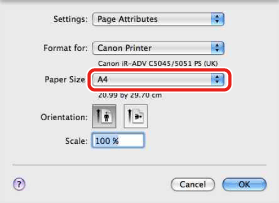

1.
From the [File] menu of the application software, select [Page Setup].
|
NOTE
|
|
For Mac OS X version 10.5 and later, the [Page Setup] dialog box is not displayed depending on the application software. With such application software, you can specify the settings for the [Page Setup] dialog box in the [Print] dialog box.
|
2.
Select [Page Attributes] from [Settings].
3.
Select the specified custom paper from [Paper Size].

4.
Click [OK].
5.
From the [File] menu of the application software, select [Print].
6.
Click [Print] in the [Print] dialog box.